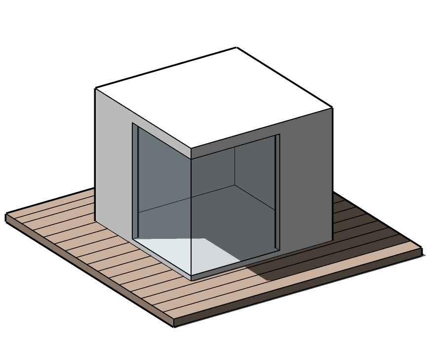
Террасная доска (декинг) используется для обустройства закрытых и открытых площадок (террасы, веранды, беседки). Данное изделие абсолютно экологически чистое, т.к. производится из 100% (без переклеек и т.д.) массивного дерева.
На сегодняшний день террасная доска из Термоясеня – это самый долговечный, стабильный и прочный вид отделки горизонтальных поверхностей. Террасная доска из Термодерева (Термоясеня) имеет ряд важных преимуществ: не гниет, меньше коробится и не трескается. Но самое главное достоинство Термоясеня – это его эстетические свойства – благородный оттенок, мягкие полутона натурального дерева, красивая спокойная текстура делают любой экстерьер современным и стильным.
Профили


Экологичность


размеров
Цены
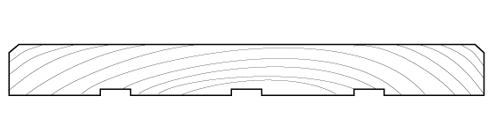 Палубная доска
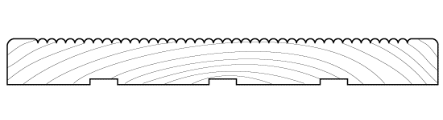 Вельвет
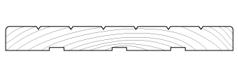 Антислип
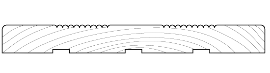 Евровельвет
| ТЕРРАСНАЯ ДОСКА (палубная доска/вельвет) | |||
| ПОРОДА | ТОЛЩИНА (ММ) | ШИРИНА (ММ) | ЦЕНА (РУБ/М2) |
| ТЕРМОЯСЕНЬ Сорт Экстра Палубная укладка. Длина доски 900-3000 мм Шаг по длине 100 мм Доска короче 2 м - не более 40% от партии |
20 | 95/100 | 3100 |
| 115 | 3500 | ||
| 135 | 3700 | ||
| 160 | 3700 | ||
| 180 | 4200 | ||
| 40 | 100 | 6700 | |
| 120 | 7500 | ||
| 150 | 7800 | ||
| 160 | 7900 | ||
| 180 | 8200 | ||
Покрытие
Покрытие защитными маслами в производственных условиях стоит +1200 руб./м2. В услугу входит: шлифовка, покрытие нижней стороны в 1 слой, покрытие лицевой стороны в 2 слоя. Мы используем только проверенные немецкие масла Kreidezeit и Leinos.
Термоясень
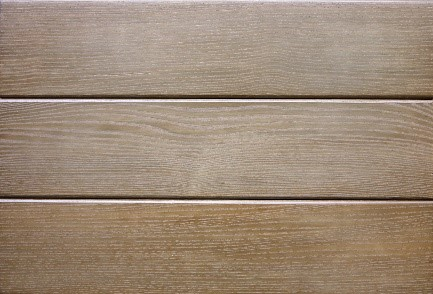
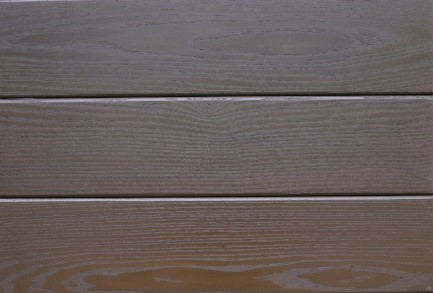
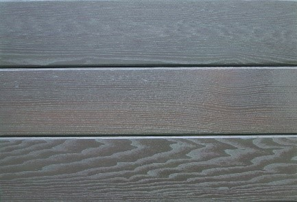
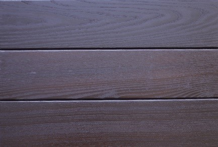
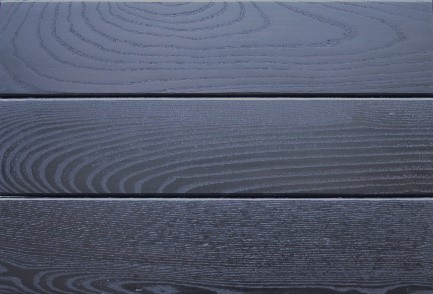
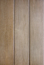
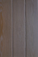
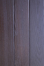
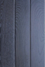
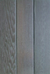
Любое натуральное дерево необходимо защищать качественными тонированными маслами от:
✔ ВЫГОРАНИЯ. При попадании солнечных лучей доска начинает тускнеть и со временем приобретает грязно-серый оттенок. При этом от выгорания террасную доску защищают ТОЛЬКО тонированные масла.✔ ГРЯЗИ И ПЫЛИ. Различные частицы грязи и пыли при попадании на незащищенную доску начинают разрушать верхний слой. Также загрязнения могут глубоко впитаться в пористую поверхность дерева и оставить неприятные пятна, которые будет очень сложно или невозможно сошлифовать.
✔ ТРЕЩИН. Попадая на незащищенную маслом доску, вода мгновенно впитывается в пористую поверхность живого дерева. При понижении температуры, влага кристаллизуется и на поверхности доски, появляются трещины, что портит внешний вид декинга. Также обязательно защитить торцы доски, это самое слабое место у живого массива.Мы рекомендуем покрывать террасную доску не только сверху, но и снизу. Снизу можно использовать любые дешевые составы. Этот недорогой символический слой с тыльной стороны террасы даст дополнительную защиту.
Наши объекты
Преимущества декинга
✔
Приятные тактильные ощущения. По такому покрытию приятно ходить босиком.
✔
Материал меньше подвержен эффекту температурных деформаций, чем аналоги.
✔
Террасное покрытие можно многократно перекрашивать, ведь цвет распространяется на всю ее толщину
Рекомендации
Исходным материалом для изготовления фасадной, террасной, палубной, половой доски, вагонки и т.д. является натуральная древесина, прошедшая экологически чистый процесс термообработки по технологии WESTWOOD. Цвет и текстура изделий являются естественными характеристиками натуральной древесины и не могут быть абсолютно идентичными в поставленной партии товара. После термообработки дерево все равно имеет склонность к деформации, но в гораздо меньших масштабах, чем не термообработанная доска.
✔ До монтажа доска должна храниться в упаковке производителя. Не допускается проникновение воды внутрь упаковки.
✔ Нельзя хранить незащищенную маслом или лаком доску без упаковки на улице под действием солнечных лучей.
✔ Запрещено вкручивать шурупы или забивать гвозди в термодерево без предварительного просверливания отверстий (доска потрескается).
✔ Запрещено резать доску (пилить/торцевать) незаточенными пилами (термообработанная доска имеет повышенную плотность, очень хрупкая на скол).
✔ В качестве направляющих рекомендуется использовать породы приближенные по плотности к используемой доске (для термоясеня - лиственница, для термопихты - термо или обработанная от гниения сосна/ель).
✔ При монтаже требуется оставлять технические зазоры между досками в зависимости от ширины доски (ширина доски - зазор):
100мм - 1мм, 120мм - 2мм, 140мм - 4мм, 160мм - 6мм, 180мм - 8мм, 200мм - 10мм
✔ Рекомендованный шаг лаг для террасы 300-400мм, для фасада 400-700мм
✔ Запрещено использовать профиль «шип-паз» (имитация бруса, вагонка и т.д.) при внешней отделке (отсутствует технологический зазор на расширение)
✔ Перед нанесением масла, доску требуется отшлифовать шкурками зернистостью P100/150 (уберет динамические волны и откроет поры)
✔ Термодерево выгорает на солнце, поэтому необходимо тонировать доску цветным маслом в два слоя с лицевой стороны и бесцветным с изнаночной стороны. Бесцветное масло (даже с УФ-фильтрами) не защищает от выгорания. Мы рекомендуем тонированные масла Kreidezeit (Германия) и Leinos (Германия).
✔ Торцы дерева необходимо закрыть воском, чтобы свести к минимуму возникновение торцевых трещин. Влага проникает в дерево именно в этих местах, и при понижении температуры кристаллизуется и рвет доску, внутри которой она находится.
Чтобы обновить покрытие, требуется вымыть термодерево раствором марсельского мыла, дать просохнуть 24 часа и нанести тонкий слой масла. Террасу необходимо обновлять 1 раз в год, фасад 1 раз в 4 года
Монтаж
Существует 2 основных вида СКРЫТОГО крепежа для террас – «Краб» и «Дуэт». Для
обрешетки под террасу из Термоясеня мы рекомендуем лаги из лиственницы 45х70 мм. При этом шаг между лагами
должен быть 300-400 мм. Очень часто лаги и крепеж (Краб) подкрашивают в тон Термоясеня.
Крепеж «Краб»
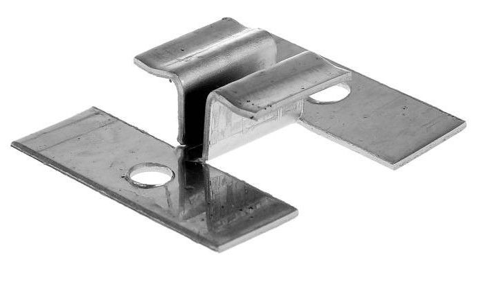
Применение крепежа Краб позволяет создать ровную поверхность настила без видимых элементов крепежа с одинаковыми технологическими зазорами между досок 6 мм; создает жесткую конструкцию, противодействующую внутренним напряжениям древесины, так как после установки предыдущей доски не возникает перекосов последующей доски благодаря крепкому креплению с лагой и быстрой стыковки досок. Крепёж изготовлен из нержавеющей стали, что обеспечивает длительный эксплуатационный срок монтируемому террасному настилу.
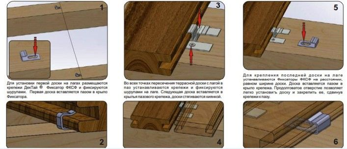
Крепеж «Дуэт»
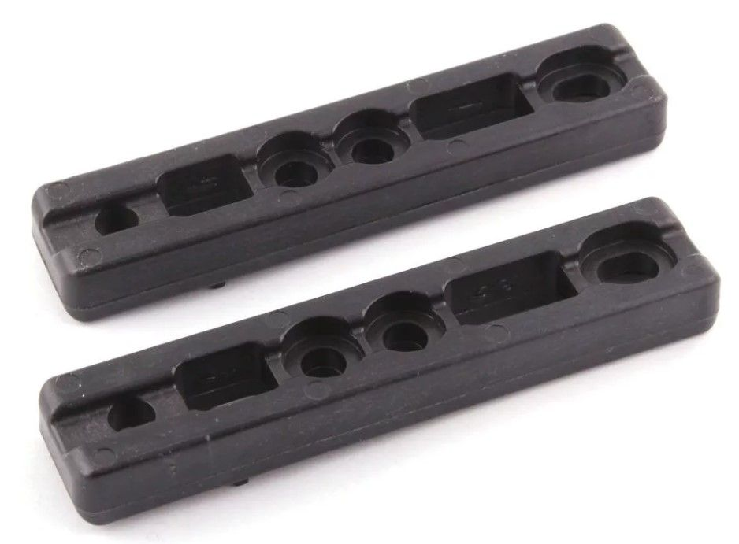
✔ выполнен из композиционного полимерного материала и не конденсирует влагу,
✔ обеспечивает долговечность конструкции террасы благодаря эффективной вентиляции скрытой части конструкции,
✔ удобен для монтажа так как снабжен монтажных ограничителем, позиционирующим крепеж относительно края доски,
✔ компенсирует разбухание-усушку обшивочной доски и не вызывает ее коробление,
✔ может быть использован с доской шириной от 90мм до 200мм,
✔ размещение головки шурупа в выемке крепежа обеспечивает идеально ровную поверхность террасы.
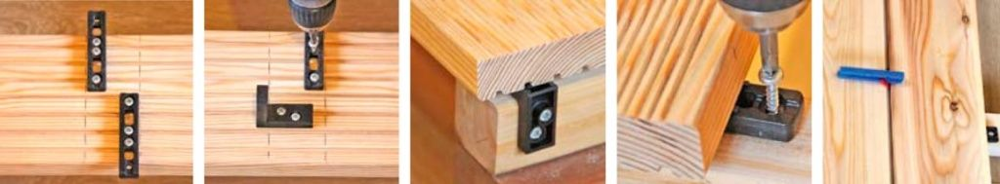
В компании «Термо Вуд» Вы сможете купить продукцию, которое прослужит вам не одно десятилетие. Стоимость доставки по Москве и области будет зависеть от района и удаленности от МКАД. Уточнить цену можно у менеджеров компании.